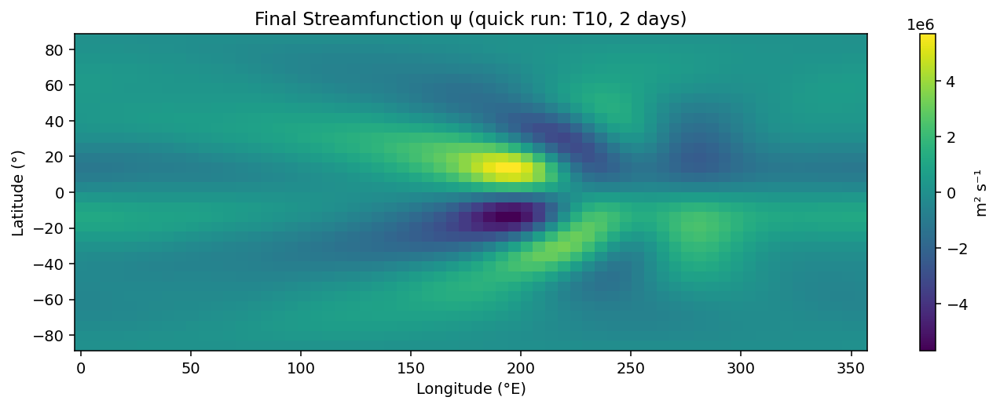
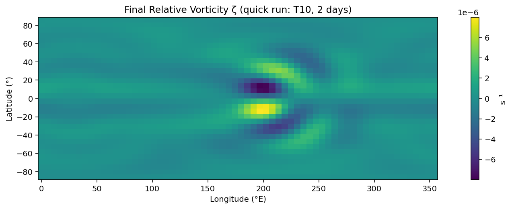
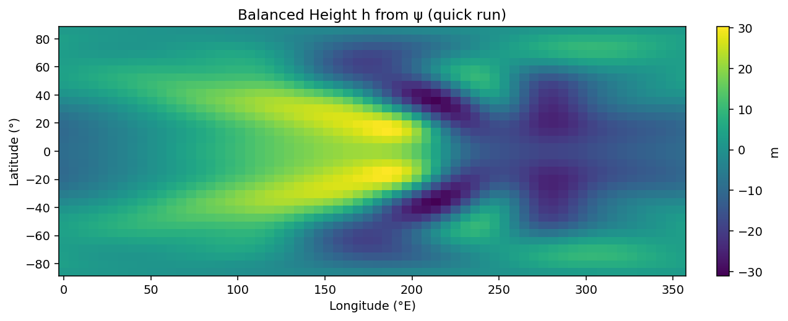

# Switch to a lighter "quick-run" configuration to generate plots without timing out
import numpy as np
import matplotlib.pyplot as plt
# Override globals for a faster demo
pi = np.pi
re = 6.371e6
omega = 7.292e-5
g = 9.8
lmax = 10 # down from 21
nx = 64 # down from 128
ny = 32 # down from 64
nk = lmax*(lmax+2)+1
nk2 = lmax*lmax + 4*lmax + 4
dt = 60.0*60.0
nt = 24*5 # 2 days for speed
rdrag = -1.0/(60.0*60.0*24.0*7.0)
fwdskip = 10
outskip = 12 # save sparsely to reduce overhead
nu = 2.5e5
diff_l_m_threshold = 8 # adapt to new lmax
# Rebuild all dependent functions quickly (reuse previous definitions but ensure they see new globals)
def idx(l, m):
return (1 + (l+1)*l - m) - 1
def leggauss_lat(ny):
x, w = np.polynomial.legendre.leggauss(ny)
lats = np.arcsin(x) * 180.0/pi
return lats, w, x
def plgndr_norm_all(lmax_local, mabs, x):
L = lmax_local + 1
out = np.zeros((L+1, x.size), dtype=float)
m = mabs
if m == 0:
pmm = np.sqrt((2*m+1)/(4*pi)) * np.ones_like(x)
else:
omx2 = (1.0 - x)*(1.0 + x)
fact = 1.0
pmm = np.ones_like(x)
for _ in range(1, m+1):
pmm *= omx2 * fact/(fact+1.0)
fact += 2.0
pmm = np.sqrt((2*m+1)*pmm/(4.0*pi))
pmm = np.where((m % 2)==1, -pmm, pmm)
out[m, :] = pmm
if L == m:
return out
if m+1 <= L:
out[m+1, :] = x * np.sqrt(2.0*m + 3.0) * pmm
oldfact = np.sqrt(2.0*m + 3.0)
for ll in range(m+2, L+1):
fact = np.sqrt((4.0*ll*ll - 1.0) / (ll*ll - m*m))
out[ll, :] = (x * out[ll-1, :] - out[ll-2, :]/oldfact) * fact
oldfact = fact
return out
def precompute_alp(lmax_local, lats_deg, x):
ny_local = lats_deg.size
L = lmax_local + 1
rows = (L+2)*(L) + 4 # safe upper bound; we will index up to nk2-1
alp = np.zeros((nk2, ny_local), dtype=float)
for mabs in range(0, L+1):
Plm = plgndr_norm_all(lmax_local, mabs, x)
for l in range(mabs, L+1):
if mabs == 0:
m_list = (0,)
else:
m_list = (-mabs, mabs)
for m in m_list:
ik = idx(l, m)
alp[ik, :] = Plm[l, :]
return alp
def spec2grid(fields, alp, lons, wlat):
nx_local = lons.size
ny_local = alp.shape[1]
out = np.zeros((nx_local, ny_local), dtype=float)
mvals = np.arange(-(lmax+1), (lmax+1)+1)
E = np.exp(1j*np.outer(lons, mvals)) # (nx, nm)
for l in range(0, lmax+2):
for m in range(-l, l+1):
ik = idx(l, m)
Y_lon = E[:, m + (lmax+1)] # (nx,)
Y_lat = alp[ik, :] # (ny,)
out += np.real(Y_lon[:, None] * Y_lat[None, :] * fields[ik])
return out
def grid2spec(fieldg, alp, lons, wlat):
nx_local, ny_local = fieldg.shape
fields = np.zeros(nk2, dtype=complex)
dlam = 2*pi/nx_local
mmax = lmax+1
mvals = np.arange(-mmax, mmax+1)
E_conj = np.exp(-1j*np.outer(np.linspace(0, 2*pi-dlam, nx_local), mvals)) # (nx, nm)
Fm = (fieldg.T @ E_conj) * dlam # (ny, nm)
for l in range(0, lmax+2):
for m in range(-l, l+1):
ik = idx(l, m)
mcol = m + mmax
fields[ik] = np.sum( Fm[:, mcol] * alp[ik, :] * wlat )
return fields
def vort2psi(vorts):
psis = np.zeros_like(vorts, dtype=complex)
for l in range(0, lmax+2):
for m in range(-l, l+1):
ik = idx(l, m)
psis[ik] = (-re*re/(l*(l+1)) if l>0 else 0.0) * vorts[ik]
return psis
def invlap(fields):
invs = np.zeros_like(fields, dtype=complex)
for l in range(0, lmax+2):
for m in range(-l, l+1):
ik = idx(l, m)
invs[ik] = (-re*re/(l*(l+1)) if l>0 else 0.0) * fields[ik]
return invs
def ddx_spec_to_grid(vars_spec, alp, lons, lats_rad):
dspec = np.zeros_like(vars_spec, dtype=complex)
for l in range(0, lmax+2):
for m in range(-l, l+1):
ik = idx(l, m)
dspec[ik] = 1j * m * vars_spec[ik]
ddx = spec2grid(dspec, alp, lons, None)
coslat = np.cos(lats_rad)[None, :]
return ddx / (re * coslat)
def ddy_spec_to_grid(vars_spec, alp, lons, lats_rad, wlat, x):
ddys = np.zeros_like(vars_spec, dtype=complex)
for l in range(0, lmax+2):
for m in range(-l, l+1):
ik = idx(l, m)
rl = float(l); rm = float(m)
if l == 0:
ddys[ik] = 0.0
continue
eta = np.sqrt( (rl*rl - rm*rm) / (4.0*rl*rl - 1.0) ) if l >= 1 else 0.0
rlp1 = rl + 1.0
rlm1 = rl - 1.0
etalp1 = np.sqrt( (rlp1*rlp1 - rm*rm) / (4.0*rlp1*rlp1 - 1.0) ) if (l+1) >= 1 else 0.0
term = 0.0+0.0j
if l <= lmax:
iklp1 = idx(l+1, m)
term += (rl+2.0) * etalp1 * vars_spec[iklp1]
if abs(m) < l:
iklm1 = idx(l-1, m)
term += -(rl-1.0) * eta * vars_spec[iklm1]
else:
if abs(m) < l:
iklm1 = idx(l-1, m)
term += -(rl-1.0) * eta * vars_spec[iklm1]
ddys[ik] = term
ddy = spec2grid(ddys, alp, lons, wlat)
coslat = np.cos(lats_rad)[None, :]
return ddy / (re * coslat)
def makediff(vorts):
diffs = np.zeros_like(vorts, dtype=complex)
for l in range(0, lmax+2):
for m in range(-l, l+1):
ik = idx(l, m)
fac = (- l*(l+1)/(re*re)) if l>0 else 0.0
diffs[ik] = nu * fac * vorts[ik] if (l - abs(m)) > diff_l_m_threshold else 0.0
return diffs
def makeforce(lats_deg, nx_local, alp, lons, wlat):
dl = 30.0
dp = 25.0
d0 = 3e-6
lon0 = 200.0
lat0 = 0.0
dx = 360.0/nx_local
lons_deg = (np.arange(nx_local) * dx + 0.5*dx)
lon2 = (lons_deg[:, None] - lon0)**2 / (dl*dl)
lat2 = (lats_deg[None, :] - lat0)**2 / (dp*dp)
mask = (lon2 + lat2) <= 1.0
f = 2.0*omega*np.sin(np.deg2rad(lats_deg))[None, :]
forcing = -f * d0 * (1.0 - np.sqrt(lon2 + lat2))
forcing[~mask] = 0.0
forceg = forcing
zav = forceg.mean(axis=0, keepdims=True)
forceg = forceg - zav
forces = grid2spec(forceg, alp, np.deg2rad(lons_deg), wlat)
return forceg, forces
def makediv(us, vs, alp, lons, lats_deg, wlat, x):
lats_rad = np.deg2rad(lats_deg)
ddxug = ddx_spec_to_grid(us, alp, lons, lats_rad)
ddyvg = ddy_spec_to_grid(vs, alp, lons, lats_rad, wlat, x)
vg = spec2grid(vs, alp, lons, wlat)
return ddxug + ddyvg + vg * np.tan(lats_rad)[None, :] / re
def psi2hgt(psis, alp, lons, lats_deg, wlat, x):
lats_rad = np.deg2rad(lats_deg)
fcor = 2.0 * omega * np.sin(lats_rad)[None, :]
ddxpsi = ddx_spec_to_grid(psis, alp, lons, lats_rad)
ddypsi = ddy_spec_to_grid(psis, alp, lons, lats_rad, wlat, x)
ug = fcor * ddxpsi
vg = fcor * ddypsi
us = grid2spec(ug, alp, lons, wlat)
vs = grid2spec(vg, alp, lons, wlat)
divg = makediv(us, vs, alp, lons, lats_deg, wlat, x)
divs = grid2spec(divg, alp, lons, wlat)
hgts = invlap(divs)
hgtg = spec2grid(hgts, alp, lons, wlat) / g
return hgtg
def run_model_quick():
lats_deg, wlat, x = leggauss_lat(ny)
lons = np.linspace(0.0, 2*pi, nx, endpoint=False)
alp = precompute_alp(lmax, lats_deg, x)
ubarg = (14.0 * np.cos(np.deg2rad(lats_deg)))[None, :].repeat(nx, axis=0)
vbarg = np.zeros_like(ubarg)
ubars = grid2spec(ubarg, alp, lons, wlat)
lats_rad = np.deg2rad(lats_deg)
ddxu_bar = ddx_spec_to_grid(ubars, alp, lons, lats_rad)
vortbarg = - ddxu_bar + ubarg * np.tan(lats_rad)[None, :] / re
vortbars = grid2spec(vortbarg, alp, lons, wlat)
ddxvortbarg = ddx_spec_to_grid(vortbars, alp, lons, lats_rad)
ddyvortbarg = ddy_spec_to_grid(vortbars, alp, lons, lats_rad, wlat, x)
forceg, forces = makeforce(lats_deg, nx, alp, lons, wlat)
vorts = np.zeros(nk2, dtype=complex)
oldvorts = np.zeros_like(vorts)
beta = (2.0*omega*np.cos(lats_rad)/re)[None, :]
for it in range(1, nt+1):
diffs = makediff(vorts)
psis = vort2psi(vorts)
ug = -ddy_spec_to_grid(psis, alp, lons, lats_rad, wlat, x)
vg = ddx_spec_to_grid(psis, alp, lons, lats_rad)
ddxvortg = ddx_spec_to_grid(vorts, alp, lons, lats_rad)
ddyvortg = ddy_spec_to_grid(vorts, alp, lons, lats_rad, wlat, x)
advecg = (
- ubarg * ddxvortg
- vbarg * ddyvortg
- ug * ddxvortbarg
- vg * ddyvortbarg
- beta * vg
)
advecs = grid2spec(advecg, alp, lons, wlat)
if ((it-1) % fwdskip) == 0:
newvorts = (vorts + dt * advecs + dt * (rdrag * vorts + diffs) + dt * forces)
else:
newvorts = (oldvorts + 2*dt * advecs + 2*dt * (rdrag * vorts + diffs) + 2*dt * forces)
oldvorts[:] = vorts
vorts[:] = newvorts
psis = vort2psi(vorts)
final_psig = spec2grid(psis, alp, lons, wlat)
final_vortg = spec2grid(vorts, alp, lons, wlat)
final_hgtg = psi2hgt(psis, alp, lons, lats_deg, wlat, x)
return {
"lons_rad": lons,
"lats_deg": lats_deg,
"final_psig": final_psig,
"final_vortg": final_vortg,
"final_hgtg": final_hgtg,
}
# Run quick model and plot
out = run_model_quick()
lons_deg_centers = np.rad2deg(out["lons_rad"])
lats_deg_centers = out["lats_deg"]
def edges_from_centers(centers):
mid = 0.5*(centers[1:] + centers[:-1])
first = centers[0] - (mid[0] - centers[0])
last = centers[-1] + (centers[-1] - mid[-1])
return np.concatenate(([first], mid, [last]))
lon_edges = edges_from_centers(lons_deg_centers)
lat_edges = edges_from_centers(lats_deg_centers)
LE, LA = np.meshgrid(lon_edges, lat_edges)
def plot_field(Z, title, units):
fig = plt.figure(figsize=(9, 3.6), dpi=140, constrained_layout=True)
ax = fig.add_subplot(111)
pcm = ax.pcolormesh(LE, LA, Z.T, shading='auto')
cbar = fig.colorbar(pcm, ax=ax)
cbar.set_label(units)
ax.set_xlabel('Longitude (°E)')
ax.set_ylabel('Latitude (°)')
ax.set_title(title)
plt.show()
plot_field(out["final_psig"], "Final Streamfunction ψ (quick run: T10, 2 days)", "m² s⁻¹")
plot_field(out["final_vortg"], "Final Relative Vorticity ζ (quick run: T10, 2 days)", "s⁻¹")
plot_field(out["final_hgtg"], "Balanced Height h from ψ (quick run)", "m")


